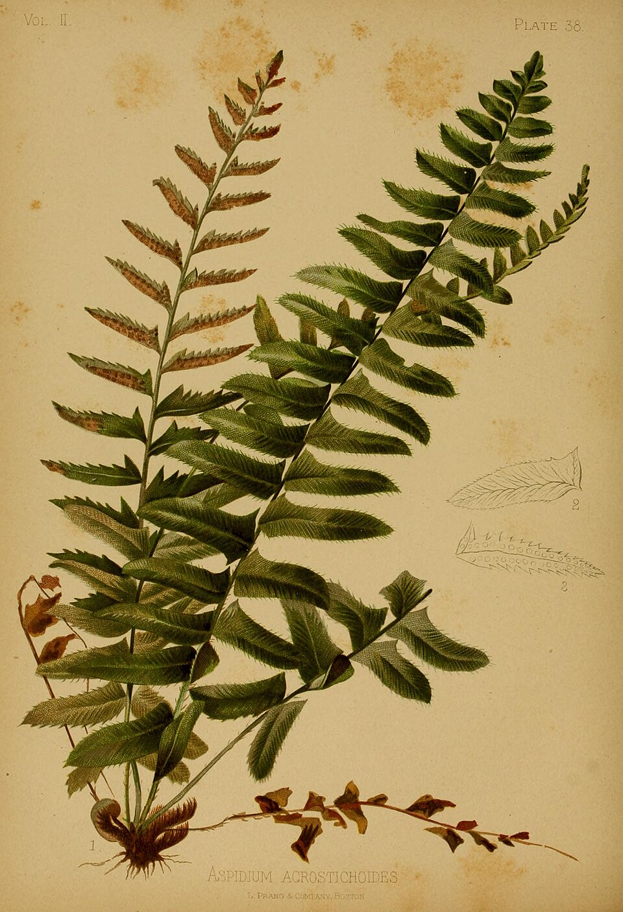
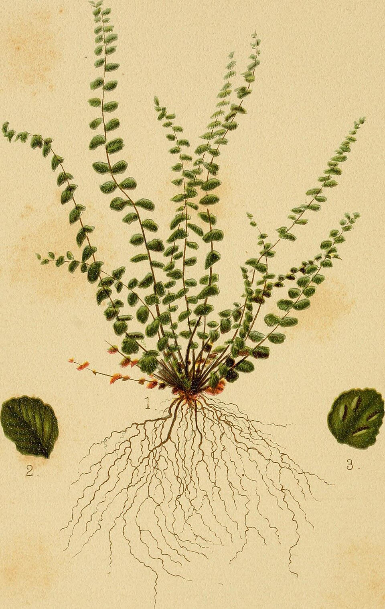
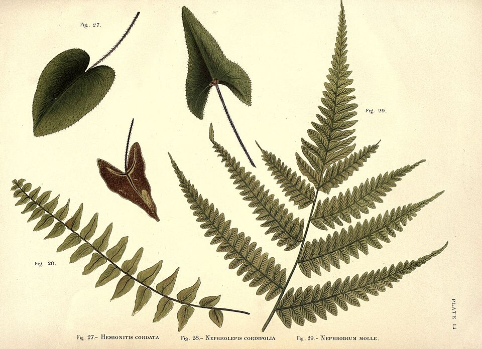

Illustrator · Travel sketcher · Teaching watercolour
Drag a page to turn it · Move the glass over a painting
About
Clara Hale is an illustrator and watercolour teacher who has spent the last six winters drawing Venice from its edges: the side canals, the boatyards, the bridges nobody photographs. She works quickly, in pencil and a few colours, standing up and usually in the wind. Her plates have appeared in travel guides, hotel menus and a children's atlas, and she runs small sketching walks each spring. This book is a selection from one season's nine pages.

Plates